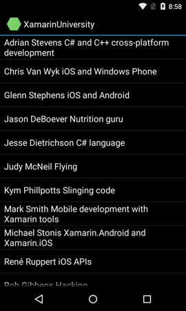
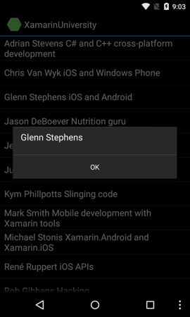

Durée
10 minutes
Objectifs
L'objectif est de gére le clic sur un élément de liste. Votre réponse à l'événement sera d'afficher une boite de dialogue qui indique quel est l'élément sur lequel l'utilisateur a cliqué. Vous utiliserez l'information passée dans les arguments de l'évenement pour déterminer l'identité de l'élement qui a été cliqué.
Les images suivantes montre ce à quoi l'application doit ressembler à la fin de cet exercice. Sur la gauche la liste des formateurs. Sur la droite, la même liste après un évenement de clic sur un élément; notez comment la boite de dialogue affiche le nom du formateur sur lequel l'utilisateur a cliqué.
|  |  |
Utilisez les éléments suivants pour raliser l'exercice.
-
S'abonner à l'évenement
ItemClicksur uneListView. -
Utiliser la propriété
Positiondans lesEventArgspour déterminer sur quel formateur on a cliqué. -
Utiliser
AlertDialog.Builderpour afficher une alerte contenant le nom du formateur sur lequel on a cliqué.
Steps
Below are the step-by-step instructions necessary to implement the exercise. It is recommended that you utilize these as an aid to completing the above high-level goals when necessary.
Handle the list-item click event
-
Open
MainActivity.cs. -
Subscribe a handler to the
ItemClickevent of the instructorListView.Note: Make sure you subscribe to theItemClickevent so you will respond when the user clicks on a specific item within the list. TheListViewclass also has aClickevent that is raised for clicks on the list itself and not an item within the list. TheClickevent is inherited from a base class and is not useful for aListView; Android will throw a runtime exception if you subscribe to it. -
In your handler, retrieve the
Positionfrom the event args. Use thePositionto get the instructor object that corresponds to the item the user clicked. - Create an alert dialog. Use the instructor's name as the alert message. Show the dialog to the user.
-
Run the app to test your work. Click on an instructor in the
ListViewand verify that the alert dialog displays correctly.
Résumé
Atteindre l'objectif principal ici nécessitait seulement quelques lignes de code: S'abonner à l'événement ItemClick du ListView
et retrouver l'identité de l'élément cliqué à partir des argument de l'évenement. Vous pouvez utiliser ce code comme base pour construire un scénario plus réaliste.
Par exemple, vous pouvez créer une interface utilisateur Maitre/Détails dans laquelle votre gestionnaire d'événement navigue dans l'application vers une Activité
de détail ou un Fragment.